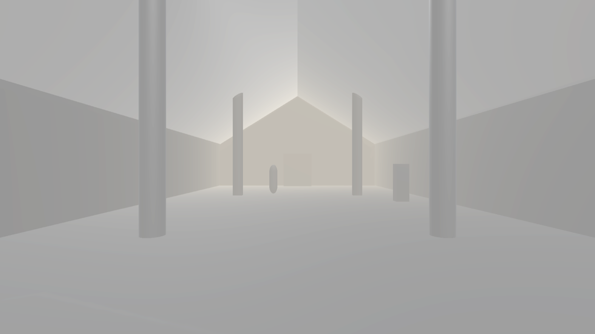

Большой неф 28 × 14 м, свод 8 м, 4 колонны · собрано и отрендерено headless на сервере · QA-гейт 9/10 + 9/10
Что это: голая серая геометрия — БЕЗ света, текстур и арта (это будет дальше).
Этап M1 проверяет одно: правильный размер. Кадры сняты камерой с уровня глаз игрока (1.65 м).
Свет тут диагностический и неравномерный (forward темнее, бока пересвечены) — это артефакт рендера на сервере без GPU, НЕ финальный свет.

Вид ВПЕРЁД, вдоль нефа (осветлено для просмотра). Видно: длинная перспектива вглубь · 4 колонны (2 ближние толстые + 2 дальние тонкие) · закрытый двускатный свод над головой · в торце стена с серверным боксом · маленькая капсула у пола = человек ростом 1.8 м для масштаба (видно, какой неф огромный).